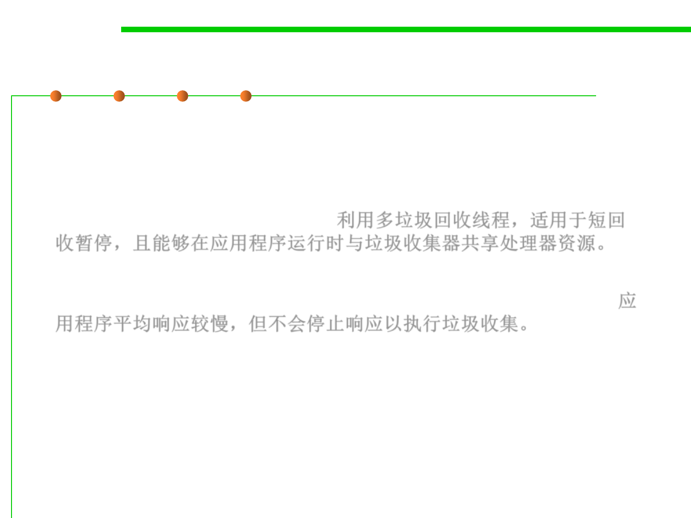

8.1 Metrics, Principles, and Methods of Construction for Performance
(2) Choosing a Garbage Collection Scheme
▪ The Concurrent Mark Sweep (CMS) implementation uses multiple
garbage collector threads for garbage collection. It’s designed for
applications that prefer shorter garbage collection pauses, and that
can afford to share processor resources with the garbage collector
while the application is running. 利用多垃圾回收线程，适用于短回
收暂停，且能够在应用程序运行时与垃圾收集器共享处理器资源。
▪ Simply put, applications using this type of GC respond slower on
average but do not stop responding to perform garbage collection.应
用程序平均响应较慢，但不会停止响应以执行垃圾收集。
▪ -XX:+UseParNewGC